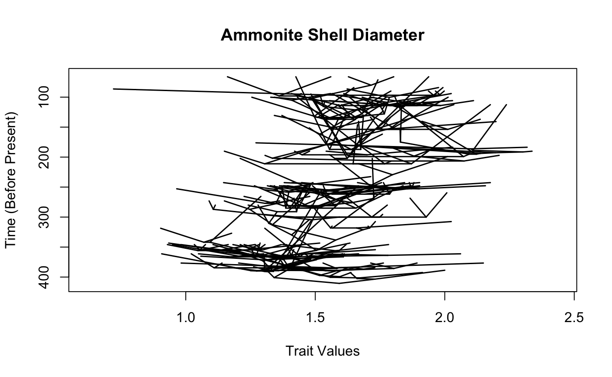
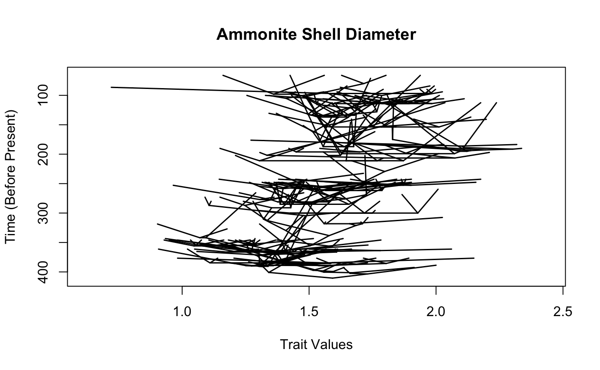
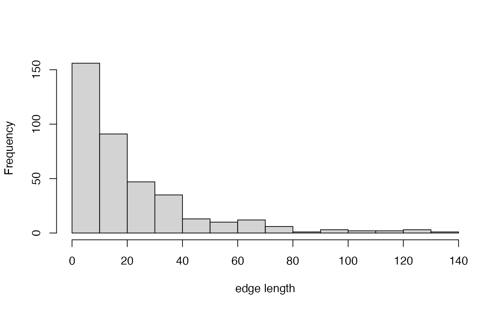
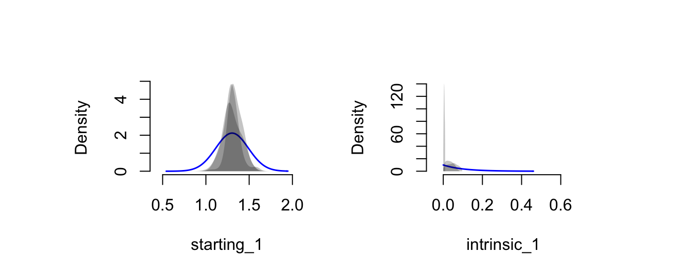
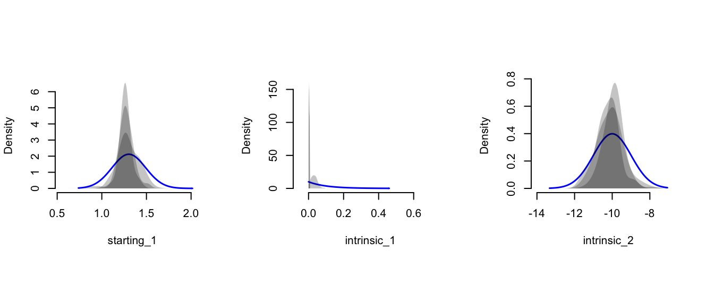

Analyzing Trait Evolution with Approximate Bayesian Computation in TreEvo
David W. Bapst
2018-09-25
Source:vignettes/treevo_ABC_vignette.Rmd
treevo_ABC_vignette.RmdFor this vignette, we will use the tree of ammonite genera, and the continuous character data for those ammonites, taken from Raia et al. (2015, American Naturalist). This data is taken from their supplemental appendix, available at the American Naturalist website, and is available as an example dataset in R package paleotree.
## Loading required package: ape## [1] "ammoniteTraitsRaia" "ammoniteTreeRaia" "ceratopsianTreeRaia"
## [4] "cervidTreeRaia" "charData" "coreLimit"
## [7] "generation.time" "multicore" "nInitialSimsPerParam"
## [10] "nRuns" "nStepsPRC" "numParticles"
## [13] "resultsBM" "resultsBound" "shellSize"
## [16] "sutureComplexity" "tree"The trees for the three groups examined in this paper all appear to be trees dated to the last appearance times (as opposed to the first appearance time) and specifically the end-boundary of the interval containing the last appearance.
First, let’s plot the tree:

This tree has polytomies - we will have to deal with that. Let’s randomly resolve tree using multi2di from ape, and then use function addTermBranchLength from package paleotree
tree<-multi2di(ammoniteTreeRaia)
# let's apply ATBL
tree<-addTermBranchLength(tree,0.01)
# let's try plotting it again
plot(ladderize(tree), show.tip.label=FALSE)
axisPhylo()Because we aren’t adjust the internal edges at all, multi2di has just inserted a number of zero-length internal edges between internodes within the tree. This means that alternative resolutions of the tree (as multi2di is stochastic) won’t create meaningfully different variance-covariance matrices, so we likely don’t need to worry about resolving multiple trees in this case (because we’re taking the trees used by Raia et al. at total face-value, which perhaps is the truly unsupported assumption).
Let’s plot a traitgram of the data.
maybe use phytools rather than mine?
## Plotting ancestral reconstructions for nodes.
## Plotting ancestral reconstructions for nodes. 

how small is the smallest branch length, even after extending terminal branches?
## [1] 0## [1] 0.199982## [1] 199982# let's look at the distribution of these edge lengths, ignoring zero-length
hist(brlen[brlen!=0], main="",xlab="edge length")
## [1] 113## [1] 0.2354167Yeesh - nearly a quarter of branches on this tree are zero-length branches. Not looking so good.
## [1] 113# number of zero-length terminal branches
# (shouldn't be any because of our application of ATBL)
sum(brlen==0 & tree$edge[,2]<=Ntip(tree))## [1] 0Let’s use TreEvo!
##
## Attaching package: 'TreEvo'## The following object is masked _by_ '.GlobalEnv':
##
## resultsBound# character data for doRun must be in matrix form
# with rows labeled with taxon names
charData<-matrix(sutureComplexity,ncol=1)
rownames(charData)<-names(sutureComplexity)Let’s analyze it with ordinary BM
resultsBM<-doRun_prc(
phy = tree,
traits = charData,
intrinsicFn=brownianIntrinsic,
extrinsicFn=nullExtrinsic,
startingPriorsFns="normal",
startingPriorsValues=matrix(c(mean(charData[,1]), sd(charData[,1]))),
intrinsicPriorsFns=c("exponential"),
intrinsicPriorsValues=matrix(c(10, 10), nrow=2, byrow=FALSE),
extrinsicPriorsFns=c("fixed"),
extrinsicPriorsValues=matrix(c(0, 0), nrow=2, byrow=FALSE),
generation.time=generation.time,
standardDevFactor=0.2,
plot=FALSE,
StartSims=10,
epsilonProportion=0.7,
epsilonMultiplier=0.7,
nStepsPRC=3,
numParticles=20,
jobName="typicalBMrun",
stopRule=FALSE,
multicore=multicore,
coreLimit=coreLimit,
verboseParticles=TRUE
)Let’s analyze it with ordinary BM with a bound
resultsBound<-doRun_prc(
phy = tree,
traits = charData,
intrinsicFn=boundaryMinIntrinsic,
extrinsicFn=nullExtrinsic,
startingPriorsFns="normal",
startingPriorsValues=matrix(c(mean(charData[,1]), sd(charData[,1]))),
intrinsicPriorsFns=c("exponential","normal"),
intrinsicPriorsValues=matrix(c(10, 10, -10, 1), nrow=2, byrow=FALSE),
extrinsicPriorsFns=c("fixed"),
extrinsicPriorsValues=matrix(c(0, 0), nrow=2, byrow=FALSE),
generation.time=generation.time,
standardDevFactor=0.2,
plot=FALSE,
StartSims=10,
epsilonProportion=0.7,
epsilonMultiplier=0.7,
nStepsPRC=3,
numParticles=20,
jobName="BMwithBoundRun",
stopRule=FALSE,
multicore=multicore,
coreLimit=coreLimit,
verboseParticles=FALSE
)The function summarizePosterior provides us with the mean, standard deviation, and highest posterior density (HPD) for each free parameter in the posterior sample, for each individual run. We can specify the probability density we would like to receive the bounds for using the alpha argument.
For example, for each Brownian Motion run:
## $starting_1
## $starting_1$mean
## [1] 1.338346
##
## $starting_1$sd
## [1] 0.1379334
##
## $starting_1$HPD
## LowerBound_alpha=0.8 UpperBound__alpha=0.8
## [1,] 1.17999 1.520336
##
##
## $intrinsic_1
## $intrinsic_1$mean
## [1] 0.03216874
##
## $intrinsic_1$sd
## [1] 0.01882001
##
## $intrinsic_1$HPD
## LowerBound_alpha=0.8 UpperBound__alpha=0.8
## [1,] 0.004458576 0.05605334## $starting_1
## $starting_1$mean
## [1] 1.309353
##
## $starting_1$sd
## [1] 0.140024
##
## $starting_1$HPD
## LowerBound_alpha=0.8 UpperBound__alpha=0.8
## [1,] 1.08707 1.457697
##
##
## $intrinsic_1
## $intrinsic_1$mean
## [1] 0.004698786
##
## $intrinsic_1$sd
## [1] 0.002421889
##
## $intrinsic_1$HPD
## LowerBound_alpha=0.8 UpperBound__alpha=0.8
## [1,] 0.001300522 0.00813148## $starting_1
## $starting_1$mean
## [1] 1.30034
##
## $starting_1$sd
## [1] 0.1390082
##
## $starting_1$HPD
## LowerBound_alpha=0.8 UpperBound__alpha=0.8
## [1,] 1.118637 1.500256
##
##
## $intrinsic_1
## $intrinsic_1$mean
## [1] 0.04580618
##
## $intrinsic_1$sd
## [1] 0.02540993
##
## $intrinsic_1$HPD
## LowerBound_alpha=0.8 UpperBound__alpha=0.8
## [1,] 0.008022971 0.07925108Or just to look at the first run of the Bounded BM run:
## $starting_1
## $starting_1$mean
## [1] 1.236393
##
## $starting_1$sd
## [1] 0.1565172
##
## $starting_1$HPD
## LowerBound_alpha=0.8 UpperBound__alpha=0.8
## [1,] 1.098027 1.461625
##
##
## $intrinsic_1
## $intrinsic_1$mean
## [1] 0.003819127
##
## $intrinsic_1$sd
## [1] 0.001981337
##
## $intrinsic_1$HPD
## LowerBound_alpha=0.8 UpperBound__alpha=0.8
## [1,] 0.001135231 0.006654571
##
##
## $intrinsic_2
## $intrinsic_2$mean
## [1] -9.820411
##
## $intrinsic_2$sd
## [1] 0.8847374
##
## $intrinsic_2$HPD
## LowerBound_alpha=0.8 UpperBound__alpha=0.8
## [1,] -11.10327 -8.734233# This function calculates Effective Sample Size (ESS) on results.
# Performs the best when results are from multiple runs.
# ESS for single runs
pairwiseESS(resultsBM)## Multiple runs of doRun_prc found, extracting particleDataFrame objects## 1.2 1.3 2.3 1.2.3
## starting_1 270.000000 278.6239 288.000000 439.00000
## intrinsic_1 2.556685 320.0000 5.695156 12.45637## Multiple runs of doRun_prc found, extracting particleDataFrame objects## 1.2 1.3 2.3 1.2.3
## starting_1 259.000000 212.0000 249.00000 360.000000
## intrinsic_1 7.202053 259.6097 14.93587 8.891902
## intrinsic_2 259.000000 212.0000 249.00000 360.000000# ESS for parameters shared between BM and bound
#pairwiseESS(list(resultsBM$particleDataFrame,resultsBound$particleDataFrame))# plotPosteriors
# for each free parameter in the posterior, a plot is made of the distribution of values estimate in the last generation
# collect the particleDataFrames into lists
resultsBMpart<-lapply(resultsBM,function(x) x$particleDataFrame)
resultsBoundpart<-lapply(resultsBound,function(x) x$particleDataFrame)
plotPosteriors(particleDataFrame=resultsBMpart,
priorsMat=resultsBM[[1]]$PriorMatrix)
